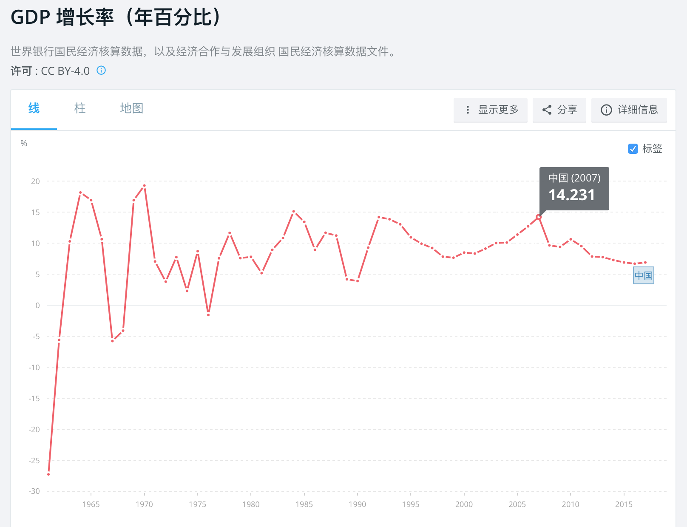
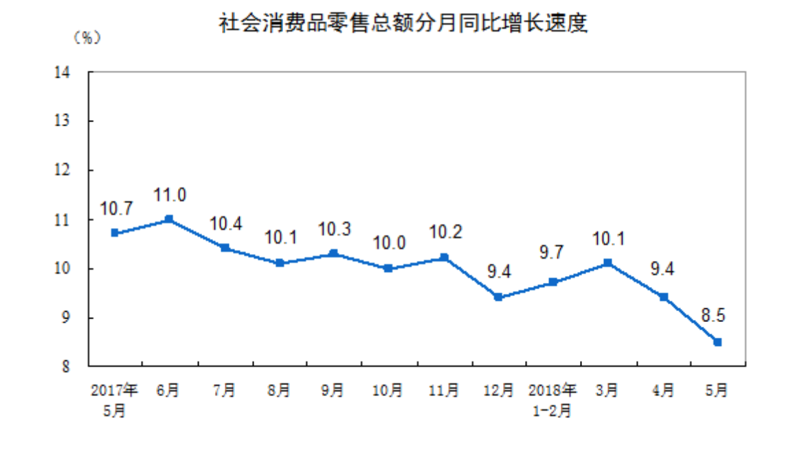

8. 经济形势好的时候该买什么？
对很多投资者来说，最烦恼的可能不是踩中风险，而是错过机会。比如，有的朋友，在 2008 年股市大跌后手握着现金什么都不敢买，眼看着黄金从 2008 年的 160 元每克一路涨到 2011 年的 380 元每克；再比如，在 2014-2015 年做多螺纹钢期货的朋友，眼看着股市债市双牛，但螺纹钢价格几乎腰斩。这还不是最惨的，最惨的例子应该是 2015年上半年卖房炒股的朋友们。2015 年年中股市崩盘，但房价在2015年底迎来了最疯狂的上涨。
你可能会说这些投资失误的朋友是运气差，其实不是的。我觉得是因为他们缺乏对经济周期的基本判断，缺乏对大类资产轮动的基本常识。什么叫大类资产轮动呢？简单来说，就是在不同的经济周期里，大类资产的表现是不一样的，经济好和经济差的时候会有不同的资产站上风口。
这种判断和常识有多重要呢？这么说吧，在一个债市上涨股市下跌的经济形势下，你拼命的在股市里找最好的股票，可能都不如闭着眼买债券基金赚得多。这就是我一再强调的，选择比努力重要。
很多个人投资者以前并不了解这些规律，所以导致投资经常“踩到坑里”。我之前在金融机构做高管，非常了解机构投资者对于经济周期和相应的大类资产选择，是有一套完整的方法论体系的。这也是机构投资者能够战胜个人投资者的原因之一。
一个完整的、从上至下的、包括所有资产品类的投资判断框架应该包括三个层面。
第一个层面是判断经济大势。经济好还是不好，在股票、债券、房地产、外汇、大宗商品、黄金等大类资产层面应该怎么选；第二层面才是某类资产里具体怎么挑，比如股票里买什么行业，房地产里买哪类城市，债券是买国债还是信用债；第三个层面是最终的投资标的，比如股票，在某个行业里到底买哪一个公司，房地产某类城市中具体买什么地段，债券的国债里具体买哪个期限的国债等等。
根据美国的研究结果显示，第一个层面的大类资产配置对于整个投资收益的贡献基本达到了 990%。也就是说，经济形势的判断与大类资产的选择基本已经确定了你的输赢。
在今天这节课程里，我会先告诉大家，在经济形势好的时候应该买什么大类资产。
我们需要先明白经济形势好的定义是什么。这种好可以从两个角度来衡量，一个是真实的经济运行的好，一个是虚拟的投资情绪的好，二者大多数是同时存在的。经济真实的好会体现在几个方面：一是 GDP 增速很快，通胀率很温和，比如保持在 2-3% 左右；二是实体投资很活跃，可以观察房地产投资、基建投资增速；三是消费旺盛，可以观察社会消费品零售总额增速。这种真实的好会导致企业与个人的收入增加，整个经济产出各个链条中的企业盈利整体改善，对于风险的承担更为有勇气，从而传递成金融投资的风险偏好提升，也就是投资情绪的好。
VeryCB 注：2017 年的中国的 GDP 增速为 6.9%，接近 1992 来以来的最低水平。
截至 2018 年 5 月，中国社会消费品零售总额增速为 8.5%，为近 15 年最低水平。

确定了经济形势好之后选择资产的核心方法是什么？在经济向好的大形势中，投资的核心在于选择那些可以直接分享经济增长红利的大类资产。也就是说，这类资产的价格基本面会伴随经济运行而走高。你通过买入这些资产就可以间接的享受到经济增长的红利；投资情绪的向好意味着更多的资金会去配置这些资产，买的资金越多，这些大类资产价格同时还会额外获得一定的追捧溢价。
什么资产可以最为直接的分享到经济增长红利呢？答案是股票与大宗商品。
我们先来说股票。股票是如何定价的呢，简单来说，股价就是这家公司未来盈利现金流的折现。因此在经济向好的形势中，整个经济的固定资产投资与消费的欣欣向荣会直接体现在整体企业的盈利将会改善。如果利率不发生变化的前提下，企业会越来越赚钱，因此其股份的价格就会走高；
大宗商品价格的核心是供需，简单来说，需求大于供给的时候，价格就会上升。需求小于供给的时候，价格就会下降。在经济向好的形势中，需求方面来看，经济需求强劲，比如固定资产投资、消费等旺盛，会直接拉动对于大宗商品的需求。供给方面来看，由于大宗生产企业需要先有盈利才能资本扩张，因此产能的形成有一定滞后，整体呈现一个需求大于供给的情景，大宗商品价格就会走高。经济越好，价格越高。因此，大宗商品也是可以直接分享到经济增长红利的资产。
以上两类资产的走势是否经过验证呢？
答案是肯定的，从国外经验来看，最为著名的就是美林证券 2004 年提出的投资时钟理论，它们通过梳理美国三十余年的经济周期与大类资产表现得出，在经济向好的形势中，股票和大宗商品的表现是优于债券、现金与黄金的。国内经验来看，虽然国内证券市场起步较晚，目前各大类资产价格可追溯的有效价格历史尚没有海外发达国家的时间长，但整体依然是符合此经验的。比如2004-2006 年中国经济形势向好，平均 GDP 以每年 12% 左右的速度增长，那段时间的南华工业品指数翻了 2.6 倍、A 股上证综指翻了 6 倍，二者都是史无前例的牛市。
最后，如果本节课程必须浓缩到只有两句话，我想是如下两句：第一，三层面投资框架是个人投资者逐步拥有机构投资思维的最为重要的起点，一切的细分投资产品的理解与配置都应该放在这个框架中来思考；第二，经济形势好的时候一定要去追逐可以分享经济增长红利的资产，即股票和大宗商品。这两句话，我希望所有个人投资者都可以印入脑海。